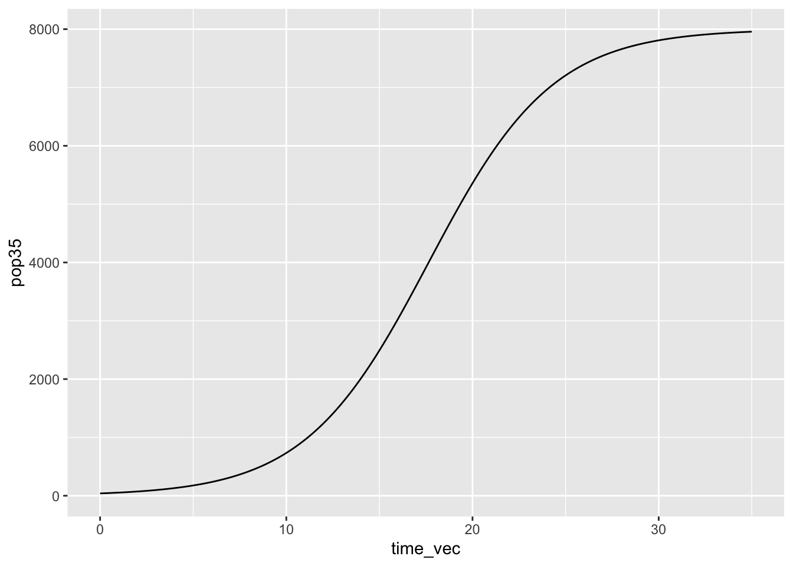
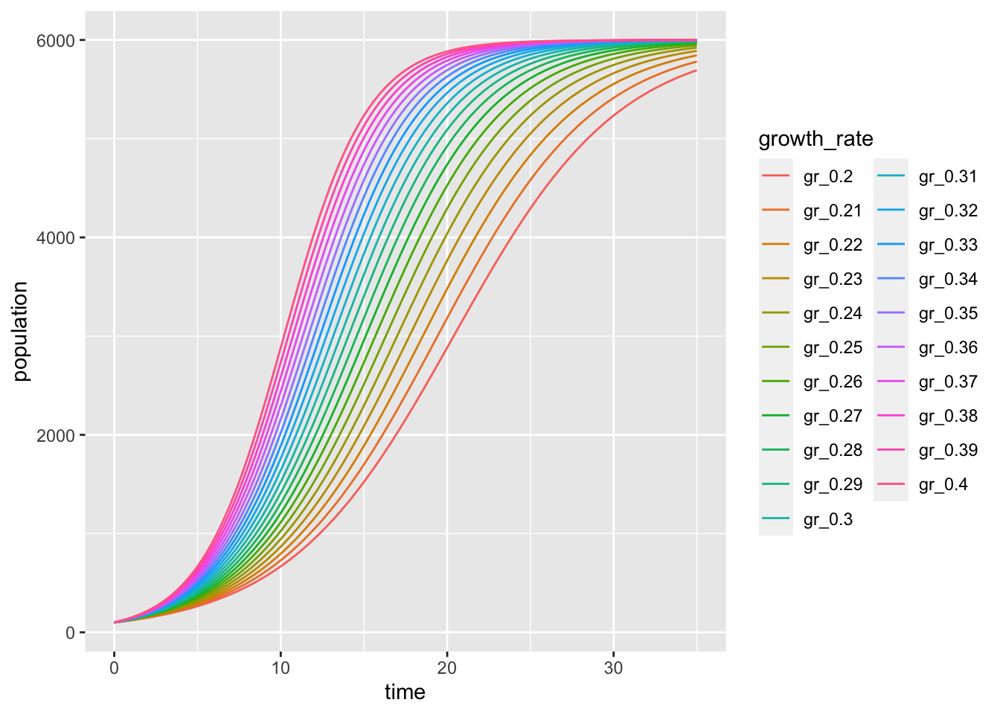

library(tidyverse)For Loops and Functions
More afternoon examples
# Shortcut for easily making a function: CMD + Option + x
#5 * x - guava
#turns into
guava_price <- function(x, guava) {
5 * x - guava
}# Make logistic growth
logistic_growth <- function(K, N0, r, time) {
K / (1 + ((K - N0) / N0) * exp(-r * time))
}
# Test:
logistic_growth(K = 5000, N0 = 100, r = 0.07, time = 42)[1] 1392.594time_vec <- seq(from = 0, to = 35, by = 0.1)
pop35 <- logistic_growth(N0 = 40, K = 8000,
r = 0.3, time= time_vec)
pop_time35_df <- data.frame(time_vec, pop35)
ggplot(data = pop_time35_df, aes(x = time_vec, y = pop35)) +
geom_line()
pop35_vec <- vector(mode = "numeric", length = length(time_vec))
for (i in seq_along(time_vec)) {
popul <- logistic_growth(N0 = 100, K = 6000, r = 0.27, time = time_vec[i])
pop35_vec[i] <- popul
}r_seq <- seq(from = 0.20, to = 0.40, by = 0.01)
out_matrix <- matrix(nrow = length(time_vec), ncol = length(r_seq))
for (i in seq_along(r_seq)) {
for (j in seq_along(time_vec)) {
pop <- logistic_growth(N0 = 100, K = 6000, r = r_seq[i], time = time_vec[j])
out_matrix[j,i] <- pop
}
}
# Do some wrangling
logistic_df <- data.frame(out_matrix, time = time_vec)
colnames(logistic_df) <- c(paste0("gr_", r_seq), "time")
logistic_df_long <- logistic_df |>
pivot_longer(cols = -time, values_to = "population",
names_to = "growth_rate")
ggplot(data = logistic_df_long, aes(x = time, y = population)) +
geom_line(aes(color = growth_rate))
Adding warnings Use warning to add a warning
v: velocity (m/s) rho: air density (kg/m^3) A: area covered by turbine (square meters)
calc_windpower <- function(rho, radius, windspeed) {
if (windspeed > 130) {
warning("That is too fast, are you sure that is correct?")
}
if (rho > 1.225) {
warning("That air density is suspicious.")
}
if (radius < 0) {
stop("Rotor radius must be greater than zero.")
}
0.3 * rho * pi * (radius^2) * (windspeed^3)
}
calc_windpower(rho = 0.6, radius = 10, windspeed = 15)[1] 190851.8calc_windpower(rho = 3.6, radius = 10, windspeed = 15)[1] 1145111Part 1: For Loops
weekdays <- c("Monday", "Tuesday", "Wednesday", "Thursday",
"Friday", "Saturday", "Sunday")
transects <- c("Transect A", "Transect B", "Transect C")
wk_transect_matrix <- matrix(nrow = length(weekdays), ncol = length(transects))
for (i in seq_along(transects)) {
for (j in seq_along(weekdays)) {
combo <- paste(weekdays[j], "-", transects[i])
wk_transect_matrix[j,i] <- combo
}
}Part 2: Functions
Task 2
force <- function(mass_kg, accel_m_s2) {
force_N = mass_kg * accel_m_s2
print(paste("The resulting force is", force_N, "Newtons."))
}
force(20, 9.81)[1] "The resulting force is 196.2 Newtons."Task 3
W = aL^b
# Recreate the table:
sci_name <- c("Chanos chanos", "Sphyraena barracuda", "Caranx ignobilis")
common_name <- c("Milkfish", "Great barracuda", "Giant trevally")
a_est <- c(0.0905, 0.0181, 0.0353)
b_est <- c(2.52, 3.27, 3.05)
fish_parms <- data.frame(sci_name, common_name, a_est, b_est)
# Write a function
fish_weight <- function(fish_name, tot_length) {
fish_info <- dplyr::filter(.data = fish_parms, common_name == fish_name)
var_a <- fish_info$a_est
var_b <- fish_info$b_est
weight <- var_a * (tot_length ^ var_b)
#print(paste("The weight is", weight))
}
fish_weight("Milkfish", 50)
length_range <- seq(from = 0, to = 100, by = 1)
milkfish_weights <- fish_weight("Milkfish", length_range)Task 4
P = 0.5* H^2* T
wave_power <- function(wave_h, wave_period) {
w_power <- 0.5 * (wave_h^2) * wave_period
}
wave_range <- seq(from = 0, to = 3, by = 0.2)
test_wave <- wave_power(wave_range, 8)